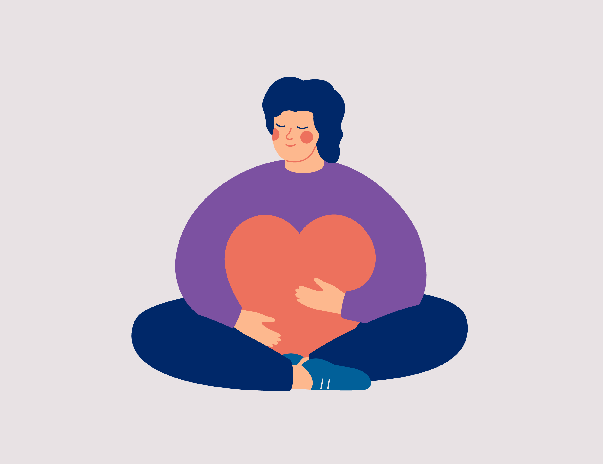

Information for Participants

Participation & Eligibility
We invite you to consider participating in our study about women's reproductive health, being conducted by Drs. Linda Giudice and Marina Sirota at UCSF and Dr. Brice Gaudilliere at Stanford. The study’s aim is to advance understanding about the uterine lining (endometrium) and women's reproductive health. The study is funded by the National Institutes of Health (NIH).
You may be eligible if you:
- Are a female between the age of 18-40 with regular periods
- Are not currently using any form of hormonal contraceptive (birth control pill, patch, IUD, implant, ring, etc.), GnRH analog (e.g., Buserelin, Goserelin, Leuprorelin, Naferelin, or Triptorelin), or aromatase inhibitor (e.g., letrozole and anastrozole)
- Are HIV negative
- Are generally healthy with no significant medical conditions (e.g., cancer)
- Not currently pregnant
If you are interested in learning more about the study, please contact our study coordinator directly (UCSF: endo-research@listsrv.ucsf.edu. Stanford: gynresearch@stanford.edu) before your gynecologic surgery/appointment and indicate your availability for a zoom or phone call with our study coordinator to review the study in more detail.
Participating in this study is entirely voluntary. It will not affect your medical care if you decide not to reply or decide not to participate in the study.
We hope that you will consider participating in our study as we strive to further understand the biological
impacts of the endometrium in women’s health.
Thank you,
The Endometrial Tissue Bank Study Team
Resources
- endometriosis.org - a global platform for news and information which links all stake holders in endometriosis, with a list of national endometriosis organizations
- endometriosisassn.org - The Endometriosis Association is a self-help organization of women and families with endo, doctors, scientists, and others interested in exchanging information about the endometriosis disease
- endomarch.org - Worldwide EndoMarch is an internationally-coordinated endometriosis coalition, representing over 100 organizations, groups, and medical societies
- endofound.org - The Endometriosis Foundation of America strives to increase disease recognition, provide advocacy, facilitate expert surgical training, and fund landmark endometriosis research
FAQs
What are my rights if I take part in this study?
Taking part in this study is your choice. You may choose either to take part or not to take part in the study. If you decide to take part in this study, you may leave the study at any time. No matter what decision you make, there will be no penalty to you and you will not lose any of your regular benefits. Leaving the study will not affect your medical care. You can still get your medical care from our institution.
How will I know that my confidentiality will be protected?
This research is covered by a Certificate of Confidentiality from the National Institutes of Health. This means that the researchers cannot release or use information, documents, or samples that may identify you in any action or suit unless you say it is okay. They also cannot provide them as evidence unless you have agreed. This protection includes federal, state, or local civil, criminal, administrative, legislative, or other proceedings. An example would be a court subpoena. The Certificate does not stop reporting that federal, state or local laws require. Some examples are laws that require reporting of child or elder abuse, some communicable diseases, and threats to harm yourself or others. The Certificate cannot be used to stop a sponsoring United States federal or state government agency from checking records or evaluating programs. The Certificate does not stop disclosures required by the federal Food and Drug Administration (FDA). The Certificate also does not prevent your information from being used for other research if allowed by federal regulations.
Can I stop being in the study?
Yes. You can decide to stop at any time. Tell the study doctor or co-investigators if you are thinking about stopping or decide to stop. If you decide to stop before the procedure, no specimen will be obtained and no blood sample will be taken for this study, and no information will be collected from your medical records. If, in the future, you decide that you don’t want to have your tissue or blood used for research, inform the UCSF investigators in writing and all of your specimens and data will be destroyed if they have not been used or unlinked.